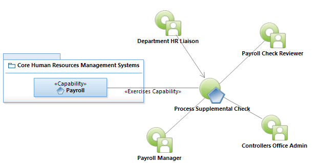
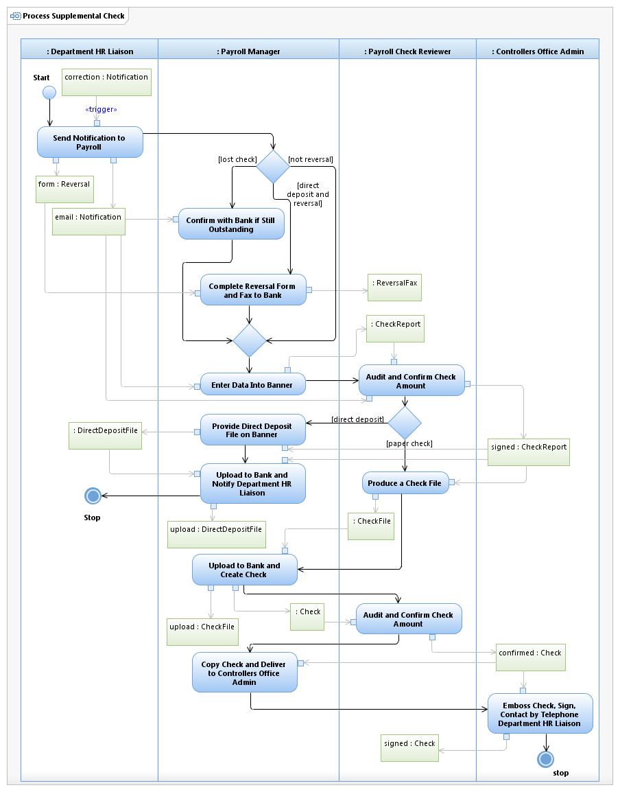

Use Case Model: Process Supplemental Check
Architect: Aaron Brown, IT Enterprise Architect Senior
Date Last Modified: 11/07/2012
User Review: Ingrid Whitley, Payroll Manager
Date: 11/07/2012
Pay employees for hours not reported on the original pay event, to reissue lost paychecks or over-payment.
Follow link to Role Definitions

Use Case Model: Process Supplimental Check

Activity Model: Process Supplimental Check